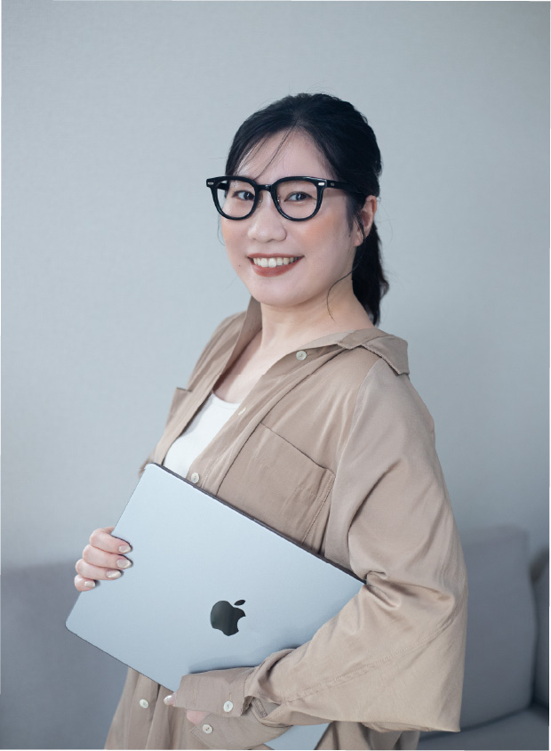

About
プロフィール
| 生年月日 | 1994年6月24日 |
|---|---|
| 血液型 | A型 |
| 拠点 | 京都府（長崎県出身） |
| 最終学歴 | 専門学校 |
| 家族 | 夫と二人暮らし |
これまでの歩み
-
小学校
近所のテニスクラブに入りテニスに没頭する毎日楽しく６年間続けました。
-
中学校
部活に女子テニス部が無く落ち込む...
クラブのコーチに頼み込み女子テニス部を作ってもらう
キャプテン・エースとして大会では個人戦・団体戦共に入賞常連校でした。 -
高校
高校では日焼けしたくない一心で室内の部活に興味を持ち吹奏楽部に入部
希望楽器届出の際、まさかの楽器名を間違え想像もしてなかったパートに入ることに...
さらには、マーチングも行う鬼厳しい部活で結果、日焼けなど気にしてられなかった。
楽器未経験ながらパートリーダーとして３年間頑張り、大会では金賞いただいていました。 -
専門学校
流石にもう日焼け勘弁...
新たに美容の世界に興味を持ち地元を離れ福岡の美容専門学校に入学
ここで現在の仕事にも繋がる美容の基礎を学びました。
ヘアメイクの業界で働くことが目標だったのでブライダルコースに通っていましたが、 将来を考え同時に美容科にも通い美容系資格11個+美容師国家資格を取得しました。 -
現在
卒業後、某大手美容サロンに就職しましたが、名古屋に飛ばされ3ヶ月の研修のはずが、 気づけば半年過ぎ、9ヶ月目に戻れないんだと悟り退社。
運よく現在の職場と出会いヘアメイク歴8年目を迎えております。
結婚を機に、場所・時間にとらわれず自由に働ける環境に魅力を感じ 以前から興味があったWebデザインを勉強。
現在は大好きなヘアメイクとWebデザインの二刀流で活動しております。
大切にしていること
最も大切にしているのが「誠実さ」です。
責任感が強い性格を活かし、
課題解決の為、一緒に伴走いたします。
ご要望をしっかりヒアリングし
細部にまでこだわり
丁寧にデザインいたします。
興味を持ったものに対して
情熱を持ってとことん深掘りしてきました。
競合他社様のリサーチ力もお任せください。
できること
Design
ホームページ制作を中心に
LP（ランディングページ）/ バナーデザイン
名刺・チラシ作成も承っております。
シンプルで余白を活かしたデザインが得意です。
ジャンルを問わず見る人の心に自然と届くデザインを作ります。
- Illustrator
- Photoshop
- figma
- canva
Coding
HTML・CSSを用いてサイトをコーディングいたします。
JavaScript・jQueryを用いて動きのあるデザインも対応可。
どんな媒体からでも見やすいレスポンシブにも対応し
運用しやすいコードを丁寧に作ります。
デザインからコーディングまでトータルコーディネートいたします。
- HTML
- CSS
- Javascript
- jQuery
- GitHub
- Visual Studio Code
デザインからコーディングまでトータルコーディネートいたします。